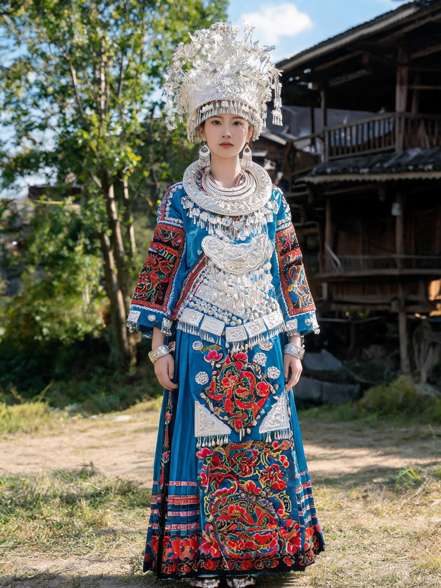
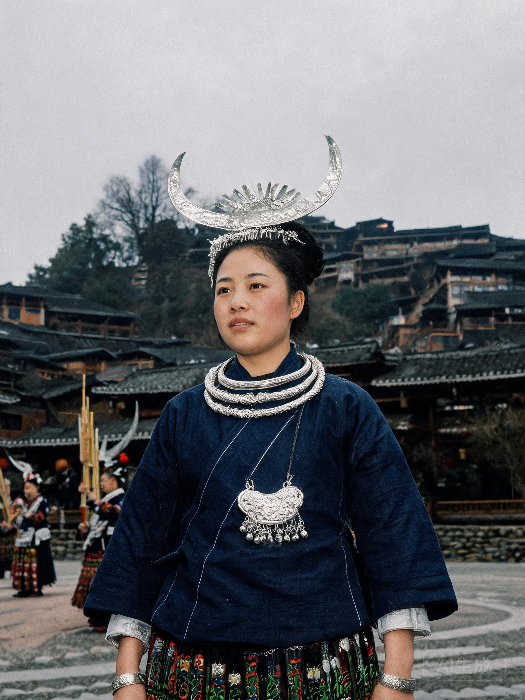
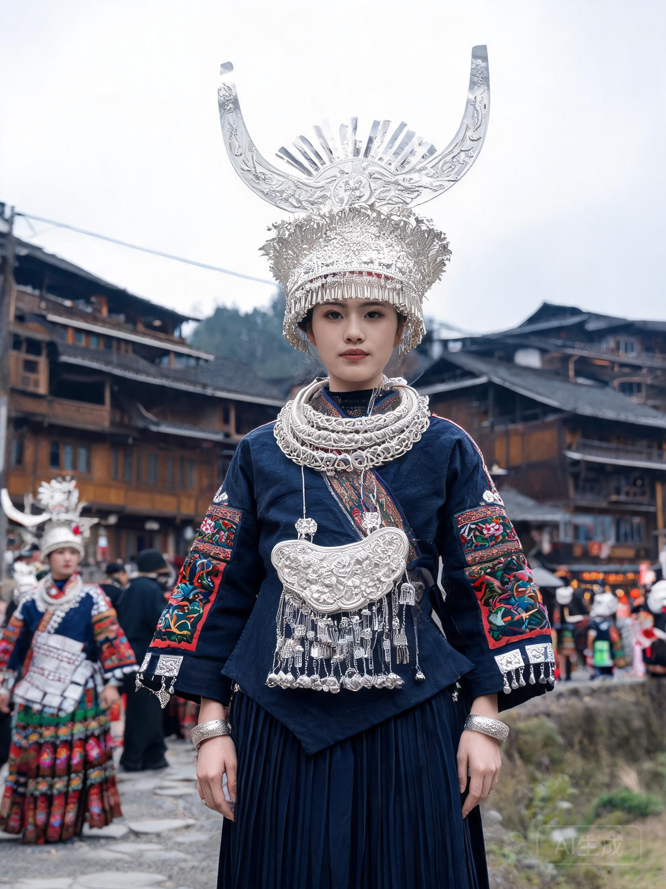
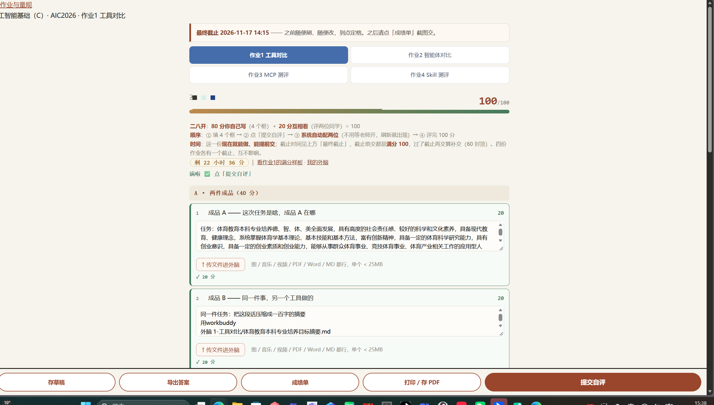

偏差体检报告
苗族银饰的三组生成观察
第 9 章 ★★★「偏差观察与缓解实践」。以贵州雷山苗族银饰为对象，固定模型与画幅，用基线组、语境组、参考组各生成 1 张，逐项对照参考材料，举出 3 处带证据的偏差，给出缓解建议与使用边界。
任务说明：这次体检什么
Scope结论先行：这次体检抓到三处偏差——① 指定的叙事纹样集体缺席（遗漏）；② 盛装、舞台、旅拍三种场合混在一套衣服里（混用 + 语境丢失）；③ 人物被默认成年轻、白皙、浓妆的正面美女（刻板印象）。每一处都附了图内证据、影响对象、缓解建议与「尚不能确认」项。
对象：贵州雷山苗族银饰，限定在苗年节庆盛装中的女性银角冠、项圈、银压领与手镯。
问题：同一模型、同一画幅、每组只改提示词，生成结果与参考材料差在哪？谁被漏掉、谁受损？能怎么补？
不做什么：不评价模型整体能力，不把生成图当作民族服饰的「标准像」，也不把一次观察上升为「模型歧视某个民族」的结论。
为什么选苗族银饰
结构清楚（冠、项圈、压领、手镯可逐项对照），纹样有叙事（蝴蝶妈妈、龙、鸟），而网络语料里「民族风写真」多、标注少，最容易看出生成偏差。
什么叫「一处偏差」
不是「我觉得不好看」，而是能指出：哪一处结构、纹样、材质或人物设定与参考材料不符，并给出图内位置与提示词原文。
最低验收
四类偏差（遗漏、混用、刻板印象、语境丢失）都有证据；缓解建议能执行；边界说明写清「不能推断什么」。
参考材料清单
Material List参考组的结构描述来自下表第 1–4 项的文字与图录摘要。受版权与肖像权限制，表内材料只做结构比对，未在页面转载原图。
| # | 材料 | 来源 | 地区 · 时期 | 使用条件 | 授权状态 | 能否公开 |
|---|---|---|---|---|---|---|
| 1 | 苗族银饰锻制技艺项目页 | 中国非物质文化遗产网（ihchina.cn） | 贵州雷山、台江等；2006 年列入国家级非遗 | 文字引用并注明出处 | 公开可查；图片版权归原发布者 | 文字可公开，图片不转载 |
| 2 | 《雷山县志》服饰与民俗章节 | 方志出版社 / 图书馆藏 | 雷山县；20 世纪末—2010 年代 | 引用页码与版本 | 公开出版 | 可公开引用 |
| 3 | 黔东南州民族博物馆藏品图录 | 馆方图录 | 黔东南；清代—现代 | 仅内部结构比对 | 需馆方授权 | 不公开 |
| 4 | 苗族银饰纹样研究论文 | 中国知网（CNKI） | 贵州；2010s—2020s | 引用观点，不复制图片 | 机构账号访问 | 可引用，不复制图 |
| 5 | 雷山苗年节庆现场照片 | 自拍 / 同行拍摄 | 雷山县；2024—2026 | 仅比对人物与场景 | 拍摄者授权 + 肖像权 | 不公开 |
| 6 | 台江姊妹节田野记录 | 访谈笔记 | 台江县；2023—2025 | 匿名引用 | 受访者知情同意 | 不公开 |
| 7 | 苗族银饰纪录片 | 央视 / 贵州卫视 | 贵州；2010s | 描述参考 | 版权方授权 | 不转载 |
| 8 | 旅游平台「苗族写真」图 | 携程 / 小红书等 | 各地；2020s | 仅作「常见偏差」反例 | 版权不明 | 不采用为参考 |
五环节环评：偏差从哪一步进来
Pipeline Review① 收集
可能引入：检索排序偏向「好看、热门、盛装」，日常服饰、老年与男性银饰、非旅游村寨被漏掉。
本次做法：先列支系与场合清单，再按清单找，不按平台热度找。
② 筛选
可能引入：以「典型」为名只留年轻女性盛装，强化「苗族=银冠美女」的单一形象。
本次做法：盛装不超过一半，保留日常、劳作、男性、老年四类。
③ 去重
可能引入：同一张图被多次转载，重复计数，造成「常见即正确」。
本次做法：按文件哈希与画面特征去重，同一场景最多留 1 张。
④ 标注
可能引入：把不同支系统称「苗族银饰」，场合、年龄、材质信息在标注时丢失；「银饰越多越传统」变成代理特征。
本次做法：每条标注必须写支系、场合、年龄、材质四项，缺项标「未知」。
⑤ 整理
可能引入：只整理节庆盛装，长尾（便装、儿童、男子）消失，模型只学会「舞台版」。
本次做法：参考集设「盛装 / 日常 / 仪式 / 人物多样性」四个分区，每区至少 2 项。
✅ 一条可执行规则
谁：材料整理人 + 第二核对人。
何时：每条材料入库前、每周五抽查 10%。
检查什么：支系、场合、年龄、授权四项，缺一项不得进入参考组；抽查不合格则整批退回重标。
三组提示记录
Prompt Log基线组：只说「苗族 + 银饰 + 节日」
目的：看模型的默认想象
Course portfolio bias-observation image, baseline group: a young Miao ethnic minority woman in traditional festival costume wearing elaborate silver jewelry, standing outdoors, photorealistic documentary photograph, natural light, full body, highly detailed
语境组：补上地区、场合、年龄与抓拍
目的：看语境能否纠偏
Course portfolio bias-observation image, context group: documentary photograph of a married Miao woman at the Miao New Year festival in Leishan County, Guizhou, China. She wears a dark indigo hand-woven jacket with cross-collar right-over-left closure and an embroidered pleated skirt, a large silver horn crown, three stacked silver neck rings, a silver chest lock and silver bracelets. Background: wooden stilt houses and a lusheng ground, overcast winter light. Candid, not staged, no heavy makeup, film grain.
参考组：把结构、纹样、材质写进提示
目的：看「给依据」能修到什么程度
Course portfolio bias-observation image, reference group: strictly follow this documented structure of Leishan Miao silver jewelry: silver horn crown about 35 cm high, two upward-curving horns with repousse patterns of Butterfly Mother, double dragons and birds; crown made of hammered silver sheets and twisted silver wire; three to five layered neck rings; rectangular silver chest lock with chased floral patterns; solid silver bracelets. Dark indigo cotton jacket with cross-collar right-over-left closure and hand-embroidered sleeves, indigo pleated skirt. Miao New Year festival, Leishan, Guizhou. Documentary photography, natural overcast light, full body. Do NOT include Tibetan headdress, Japanese kanzashi, fantasy armor, stage costume, heavy makeup, or generic ethnic fantasy ornament.
观察表：五个维度逐项对照
Observation Table| 维度 | 基线组 | 语境组 | 参考组 | 判断依据 |
|---|---|---|---|---|
| 服饰结构 | 亮蓝缎面长袍 + 大红绣花；银花冠 + 流苏；无百褶裙、无交领右衽 | 深蓝交领上衣 + 绣花百褶裙；银角冠 + 三层素面项圈 + 链挂压领 | 深蓝上衣 + 百褶裙；高银角冠 + 多层细项圈 + 大压领 + 垂链；压领比例偏大 | 与材料 1–3 的结构描述逐项比对 |
| 纹样装饰 | 通用花卉、蝴蝶、流苏；无叙事纹样 | 角面仅放射齿与卷草；无蝴蝶妈妈、龙、鸟 | 角面卷草花卉 + 放射银条；压领缠枝花卉；仍无指定叙事纹样 | 提示词已点名三种纹样，图内不可辨 |
| 材料工艺 | 镜面高反光银 + 缎面，机压/铸造感 | 哑光锤揲感较好；项圈为圆条 | 高抛光、细密錾刻感，但链条与铃铛偏现代饰品 | 看反光、边缘、连接方式 |
| 人物场景 | 年轻女性、浓妆、正面摆拍、晴天旅拍 | 中年女性、素颜、抓拍、阴天村寨、芦笙队 | 年轻女性、精致妆、正面摆拍、村寨背景 | 看年龄、妆容、姿态、光线与背景 |
| 来源符合度 | 低：通用「民族风」 | 中：结构与场景较接近 | 中偏高：结构更全，纹样仍不符 | 五维综合，不折算总分 |
三处偏差：证据、影响、缓解
Findings指定叙事纹样集体缺席
证据
参考组提示词明确写了 “repousse patterns of Butterfly Mother, double dragons and birds”（蝴蝶妈妈、双龙、鸟纹浮雕）。但参考组图中，银角冠的角面是卷草花卉 + 放射状银条，压领是缠枝花卉，没有任何可辨识的蝴蝶、龙或鸟。语境组的角面更简化为素面放射齿。基线组则是通用银花与流苏。
这不是「画得不像」，而是提示词点名的文化叙事没有进入图像：纹样被替换成更常见的装饰母题。
影响对象
- 依赖银饰纹样识别支系与场合的本地观众与传承人：看到「像但不对」的成品。
- 不了解苗族的普通观众：把通用花卉误认为苗族纹样，形成新的错误知识。
- 文化叙事本身：蝴蝶妈妈、龙、鸟所承载的族源与祝福含义被降级为「好看的花纹」。
缓解
数据侧：为每类纹样建立「名称—图样—位置—含义」对照卡，参考组至少附 2 张局部特写，并在标注中写明「可辨识特征」。
生成侧：把纹样拆成可检查清单逐项提示（角面 / 压领 / 袖口分别写），出图后用局部重绘补纹样，再由了解当地文化的人复核一次。
一套衣服里混了三种场合
证据
基线组把盛装银角冠、舞台化亮蓝缎面、旅拍晴天村寨拼在同一张图里：银花冠与流苏偏向舞台/影楼，亮蓝缎面和大红绣花偏向旅游写真，深蓝土布与百褶裙的日常结构反而消失。
提示词只写了「traditional festival costume / standing outdoors」，没有限定支系、场合与光线，模型便用最常见、最上镜的「民族风」模板补位。这不是单一元素错，而是场合与支系被混成一个笼统的「苗族风」。
影响对象
- 本地社区：盛装、舞台装、旅拍装被混为一谈，仪式边界被抹平。
- 观众：以为苗年就是「穿亮色衣服拍照」，看不到芦笙场、集体仪式与日常服饰。
- 长尾服饰：便装、老年装、男子银饰在语料中进一步不可见。
缓解
数据侧：按「支系 × 场合 × 年龄」分层收录，盛装不超过一半；每条材料写清场合（节庆/仪式/日常/舞台）。
生成侧：提示词强制写清支系、场合、时段、光线，并加负向约束（不要舞台服装、不要旅拍写真）；出图后由了解当地文化的人判断「这套衣服能不能同时出现在这个场合」。
人物被默认成年轻、白皙、浓妆的正面美女
证据
基线与参考组都生成了年轻、对称脸、精致妆、正面站定的女性；参考组提示词已经写了 “Documentary photography, natural overcast light, full body”，仍没有摆脱写真感。
只有语境组明确写 “married woman … Candid, not staged, no heavy makeup” 时，才出现中年、素颜、侧脸抓拍的女性。也就是说：不写年龄与状态，模型就默认「年轻美女」。
影响对象
- 中年与老年女性、儿童、男性：在「苗族银饰」的默认图像里继续缺席。
- 女性形象：被固定为被观看的「盛装美女」，劳动与日常状态不可见。
- 观众认知：「苗族 = 年轻美女 + 银冠盛装」成为默认想象。
缓解
数据侧：给参考集设年龄与身份配额（老年、中年、儿童、男性、日常、劳作），每次至少各 1 项。
生成侧：提示词明确写年龄、表情、姿态、妆造与「抓拍 / 不看镜头」，必要时用参考图约束；评审时至少检查 1 张非年轻女性形象是否成立。
缓解建议：数据侧 + 生成侧
Mitigation数据侧：把「分层」写进采集规则
做什么：建一个最小参考库，按「支系 / 场合 / 年龄 / 授权」四列标注；盛装不超过一半，日常、仪式、老年、男性、儿童各留样本；每类叙事纹样配一张局部特写。
谁在何时检查：材料整理人入库前自检，第二核对人按 10% 抽查；四项缺一项整批退回。
作用范围：本课程与小型文化项目可执行，能直接减少「长尾消失」和「盛装单一化」。
生成侧：把「可检查项」写进提示
做什么：用固定模板：对象 → 支系 → 场合 → 结构（冠/项圈/压领/手镯）→ 纹样（逐项点名）→ 材质 → 人物（年龄/妆造/姿态）→ 光线 → 负向约束。
谁在何时检查：生成后先按清单自检，再请了解当地文化的人复核；纹样缺失用局部重绘补，不以「看起来像」放行。
作用范围：单次创作与课堂演示能明显提升结构准确度。
使用边界：哪些能做，哪些不能
Boundaries本报告的使用边界
- 不得公开或再利用：博物馆图录、田野照片、受访者信息、版权不明的旅游宣传图；本页只展示 AI 生成图，不转载参考原图。
- 文化主体的意见优先：对外发布前请当地传承人或社区代表复核；对方有异议，先撤下再改。
- 不能推断：不能推断「模型整体歧视苗族」，不能推断所有支系都如此，不能把生成图当作民族服饰的「标准像」。
- 不能用于：商业旅游宣传、民族文化「复原」、训练数据二次分发。
- 结论有效期：更换模型版本或提示策略后需重做体检；本页只代表 2026-11-16 这一次生成。
- 人物说明：页面人物均为 AI 生成，非真实人物；参考材料中的人物未公开。
验收对照：对着量规自查
Checklist| 练习要求 | 本报告对应位置 | 状态 |
|---|---|---|
| 材料清单 5–8 项，含来源与授权状态 | §01 参考材料清单（8 项） | 已满足 |
| 收集→筛选→去重→标注→整理，五环节环评 + 1 条规则 | §02 五环节环评 | 已满足 |
| 三组提示（基线 / 语境 / 参考），固定模型、画幅、参数、次数 | §03 三组提示记录 | 已记录；模型版本与 seed 不可见，已如实标注 |
| 观察表：服饰结构 / 纹样装饰 / 材料工艺 / 人物场景 / 来源符合度 | §04 观察表（5 维 × 3 组） | 已满足 |
| 四类偏差（遗漏、混用、刻板印象、语境丢失）各有证据 | §05 三处偏差（覆盖四类） | 已满足 |
| 缓解建议：数据侧 1 条 + 生成侧 1 条，各说作用范围与局限 | §06 缓解建议 | 已满足 |
| 使用边界：写清哪些不得公开、文化主体意见、不能推断什么 | §07 使用边界 | 已满足 |
| 能让别人照着复现同一体检 | §03 提示词原文 + §04 观察维度 | 部分：模型版本与 seed 不可见，无法完全复现 |
作业凭证：第九次作业的两份记录
Evidence下面两张图是本学期学习平台上的完成记录，与偏差体检报告一起编为第九次作业。平台截图中的姓名与学号已做像素化遮挡。
